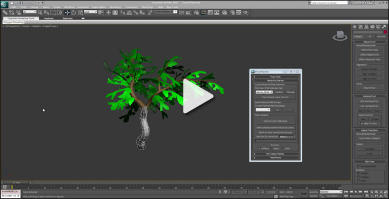
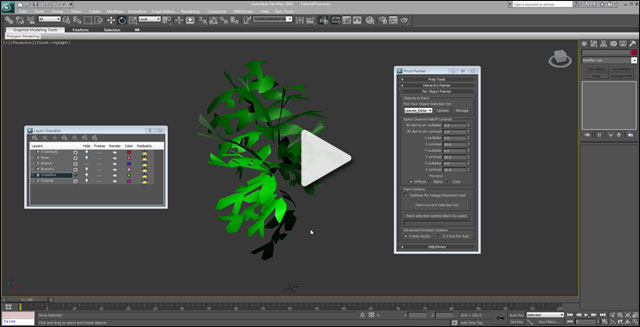

UDN
Search public documentation:
PivotPainterToolCH
English Translation
日本語訳
한국어
Interested in the Unreal Engine?
Visit the Unreal Technology site.
Looking for jobs and company info?
Check out the Epic games site.
Questions about support via UDN?
Contact the UDN Staff
日本語訳
한국어
Interested in the Unreal Engine?
Visit the Unreal Technology site.
Looking for jobs and company info?
Check out the Epic games site.
Questions about support via UDN?
Contact the UDN Staff
支点绘图工具
概述

安装
[UE3Directory]/Engine/Extras/3dsMaxScripts/PivotPainter.ms
您也可以直接下载 Pivot Painter 脚本： PivotPainter.ms (右击，选择另存为下载)
这个视频涵盖了脚本的安装、键盘快捷方式的创建和用来打开Pivot Painter tool(支点绘图工具)的菜单。
 (点击查看视频)
(点击查看视频)
准备工具
 (点击查看视频)
(点击查看视频)
Hierarchy Painter(层次绘图器)

(点击查看视频)Per Object Painter(每个对象描绘工具)

(点击查看视频)虚幻着色器示例
-
[UE3Directory]/UDKGame/Content/TestPackages/UDNExamples/PivotPainterExamples.upk -
[UE3Directory]/UDKGame/Content/Maps/Examples/PivotPainter_Examples.udk
3D Studio Max 示例文件
- Tree.max (right-click, save as to download)
需求
- 3D Studio Max - 已经使用3D Studio Max2010及2012版本对该脚本进行了测试。
- 该Pivot Painter(支点绘图器)材质功能(从2012年1月起可用)。没有该功能也可以使用脚本，但有这个功能会使数据使用变得更加容易。